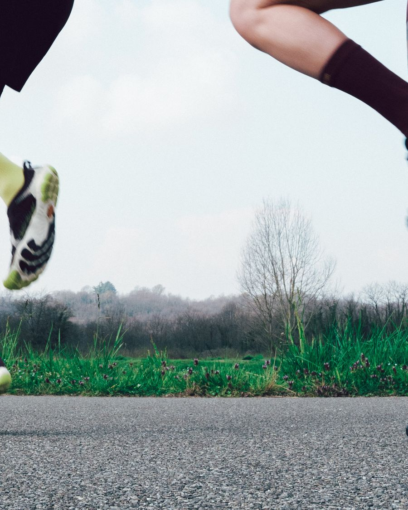
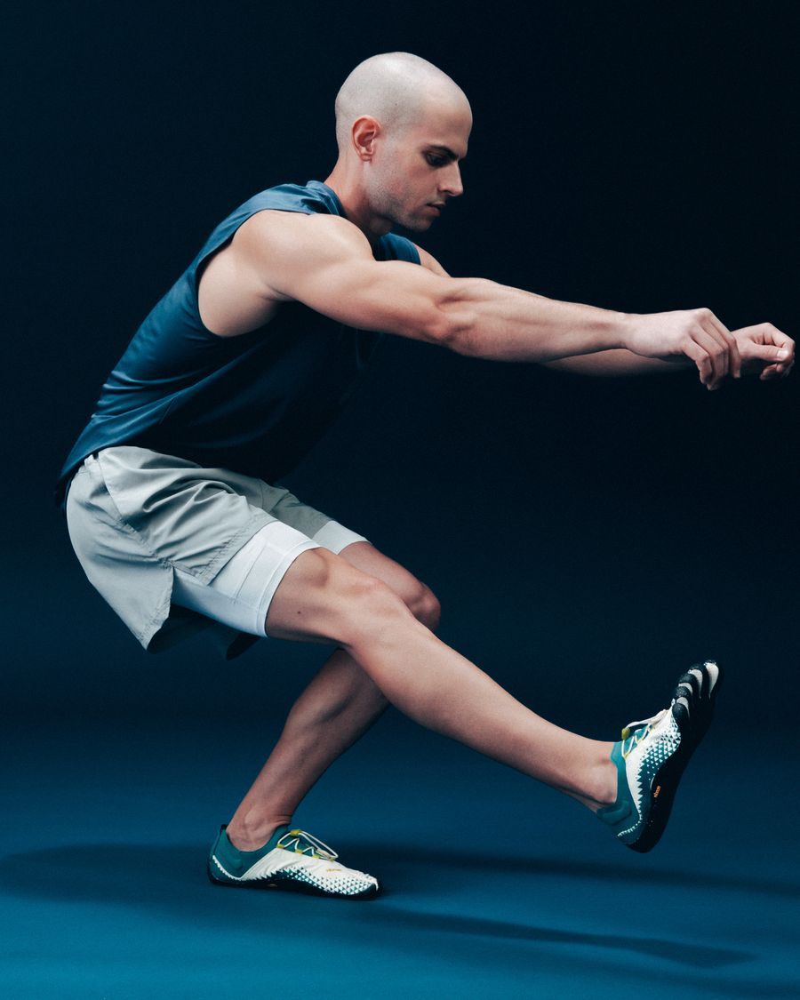
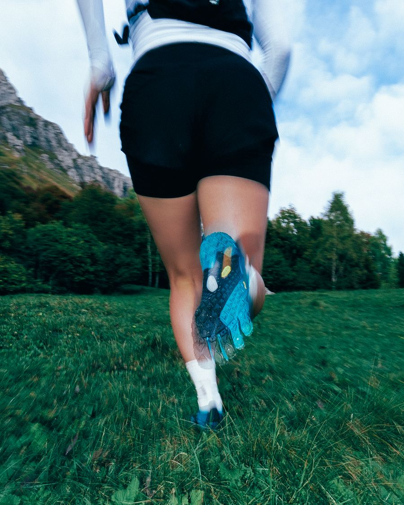
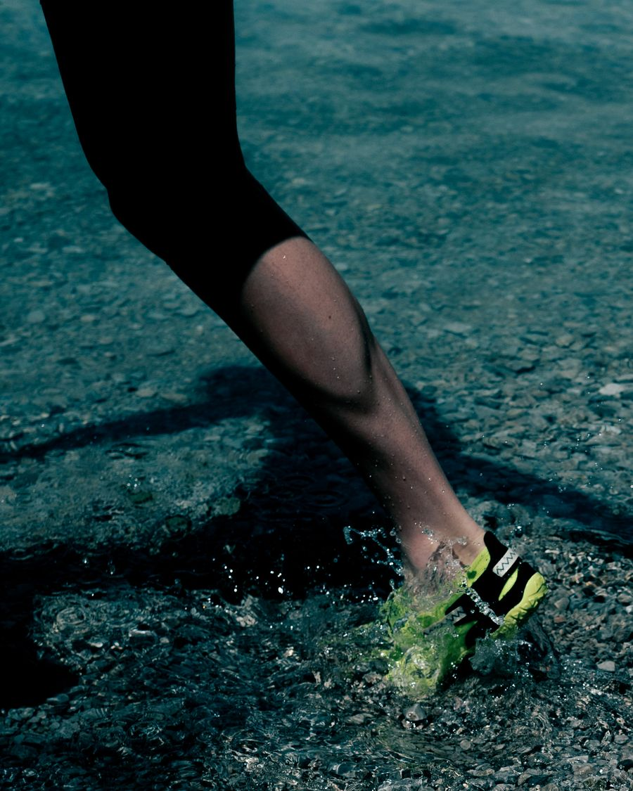
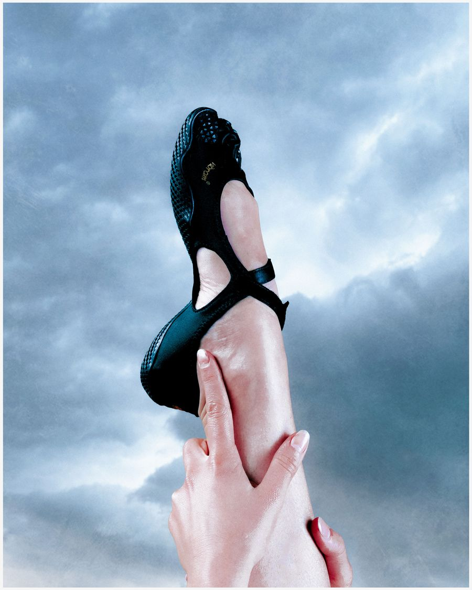

Road Running
V-Run
Light, breathable and fast. The everyday road runner.
Vibram FiveFingers Pop-Up Event · Ativo Plaza
Up to 30% OFF
Event Overview
Barefoot Malaysia brings our full Vibram FiveFingers lineup to Ativo Plaza. Come and feel the difference of five-toe freedom, get fitted by our team and let’s start barefoot shoes style.
About the Brand
Vibram FiveFingers are minimalist shoes with five individual toe pockets, a thin and flexible Vibram rubber sole, and almost nothing in between you and the ground. They are designed to let your feet move the way they were built to move.

Event Lineup
From the road to the trail, the water, the studio and the gym. Every model below is at the pop-up, up to 30% off, in men’s and women’s sizes.

Light, breathable and fast. The everyday road runner.

Lugged grip and quick closure for mud, roots and rock.

Fast-drying, open-air models for beaches, rivers and hot days.

A barely-there Mary Jane with grip for the studio floor.

Flat, stable and locked in for lifting and functional training.
Colours and sizes are subject to availability. Event discounts are applied at the booth and vary by model.
Why Barefoot
Healing modern aches with barefoot movement
Build core foot strength to naturally align your body posture.
Boost blood circulation to relieve tension and chronic pain from conditions such as flat feet, bunions and more.
Activate sensory feedback for faster reflexes and better foot landing. This promotes injury prevention by optimizing impact mechanics, allowing muscles to better absorb the landing force.
Shifts gravity forward, causing back and shoulder tension.
Narrow toe box squeezes toes together.
Block ground feedback, slowing balance reflexes.
Sends harsh impact directly into joints.
Restricts movement and weakens foot muscles.
New to barefoot shoes? Start with short walks and build up gradually. Our team at the booth will show you how.
At the Booth
No booking, no pressure. Drop by any time between 12 PM and 8 PM and we will walk you through it.
Head to Ativo Plaza in Bandar Sri Damansara and look for the yellow Vibram FiveFingers booth. Use the map link below to navigate.
Running, trails, water, yoga or the gym? Our team will point you to the models that fit how you plan to use them.
Slide your toes into the pockets, then walk, jump and squat. Try different models and sizes until one feels right.
Choose your model and colour and pay at the booth with the event discount applied. Stock is limited, so early visitors get the widest choice.
Leave with your new pair, care instructions and a simple plan for easing into barefoot movement over the first few weeks.
FAQ
The event offers up to 30% off across the Vibram FiveFingers range. The exact discount depends on the model and colourway, and is applied at the booth during the three event days only, while stocks last.
Yes, that is the whole point of the pop-up. All models in the lineup are available to try in men’s and women’s sizes. FiveFingers fit differently from regular shoes because each toe has its own pocket, so try a few models and sizes and our team will help you find the pair that fits you best.
Take it gradually. Begin with short walks of 20 to 30 minutes and increase the time over a few weeks as your feet and calves adapt. Build up to running or longer sessions only once walking feels comfortable. Listen to your body and rest if anything feels sore.
No. FiveFingers are designed to be worn without socks. If you prefer socks, five-toe socks work with every model.
Machine wash cold on a gentle cycle with mild detergent, then air dry away from direct heat. Never put them in a tumble dryer.
No registration is needed. Walk in any time between 12 PM and 8 PM on 13, 14 or 15 November.
Event Details
13th (Fri) – 15th (Sun) November · 12 PM – 8 PM